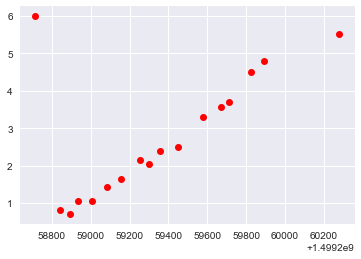
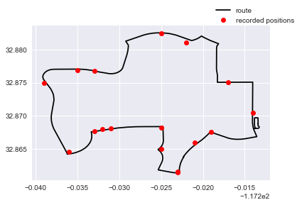
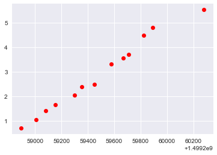
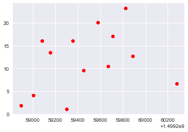
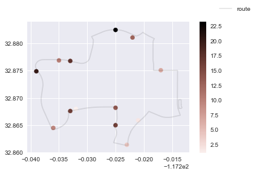

SDMTS Part 4 Feature Engineering
Today we will begin to take advantage of having saved chunks of the data, and begin to do some feature engineering, which will give us a bit more data that we can use.
Important Links
The notebooks and Swift script can be found here in the Part 4 folder.
Introduction
The script that I am using gathers 24 hour chunks of the feed, spaced apart by sixty seconds. With these chunks of data, we can estimate the average velocity the bus traveled at at any given time. Let me walk you through my methodology!
I wrote the script to generate these features in Swift, since it as a compiled language it has better performance characteristics than Python, while also having many useful native features, such as dictionaries and optional values, which help make the script pretty easy to hack together.
The way the file IO and command line arguments are set up aren’t particularly interesting. If you want to take a look, they are in the source code.
First, let’s take a look at the basic object we will be working with:
class BusEntity {
let route_id: String
let trip_id: String
let timestamp: Int
let latitude: Float
let longitude: Float
let vehicle_id: Int
// ...
These are the values that were originally scraped from the feed, and thus are already defined prior to running the script. Thus these properties are defined the moment the object is initialized.
The next property we have to define is the shape_id:
var shape_id: String? = nil
We use the static data set to create two dictionaries that we will use throughout the script:
class StaticDictionaryCollection {
let trip_idTOshape_id: [String: String]
let shape_idTOshapes_array: [String: [Shape]]
// ...
I hope their names are descriptive enough. To define the shape_id property then is straightforward enough:
func getShape_id(resource: [String: String]) {
self.shape_id = resource[self.trip_id]
}
Now that the basic properties are defined, we can move forward.
Distance Traveled
Getting the shape vertices
The shapes.txt file from the static data set contains a value for each shape vertex called dist_traveled, which gives the distance traveled by the bus once it reaches that vertex in the route. Then, if we can map each recorded bus position to a shape vertex and its adjacent vertices, we can interpolate the distance traveled at that recording. Thus the first thing we need is the closest shape vertex and it’s neighbors:
var shapeAdj: Shape? = nil // Closest shape vertex
var shapeAnte: Shape? = nil // Vertex before the closest
var shapePost: Shape? = nil // Vertex after the closest
To acutally find the nearest shape to each point, I began with iterating through the array of shape vertices using a bounding box:
func findCandidates(shapeSet: [Shape]) -> [Int] {
var candidateIndices: [Int] = []
let upperLat = self.latitude + bbox_for_buses
let lowerLat = self.latitude - bbox_for_buses
let upperLon = self.longitude + bbox_for_buses
let lowerLon = self.longitude - bbox_for_buses
for (index, shape) in shapeSet.enumerated() {
let lat = shape.latitude
let lon = shape.longitude
if lat >= lowerLat && lat <= upperLat {
if lon >= lowerLon && lon <= upperLon {
candidateIndices.append(index)
}
}
}
return candidateIndices
}
Doing this generates a smaller list of possible closest vertices. Doing this has two main advantages:
- Finding the closest shape to the recorded position on first pass is computationally much more expensive than simply running the list through two comparison operators. With a substantially smaller list of feasible candidates, we save a ton of time.
- The feed occasionally records the bus’s position when it is not actually running a route. Thus, using this bounding box first culls the recorded positions that aren’t actually close enough to the route to be on a trip.
With our reduced list, we can find the closest shape and its neighbors:
func findShapes(candidates: [Int], shapeSet: [Shape]) {
guard candidates.isEmpty == false else { return }
var sepMin: Float = 9999.9
var nearestIndex: Int? = nil
for index in candidates {
let shape = shapeSet[index]
let sepLat = (self.latitude-(shape.latitude))*(self.latitude-(shape.latitude))
let sepLon = (self.longitude-(shape.longitude))*(self.longitude-(shape.longitude))
if sepLat+sepLon < sepMin {
sepMin = sepLat+sepLon
nearestIndex = index
}
}
guard nearestIndex != nil else { return }
self.shapeAdj = shapeSet[nearestIndex!]
if nearestIndex != 0 {
self.shapeAnte = shapeSet[nearestIndex!-1]
}
if nearestIndex != (shapeSet.count)-1 {
self.shapePost = shapeSet[nearestIndex!+1]
}
With the proper shape vertices define, we can interpolate the distance traveled.
Distance traveled interpolation
NOTE: I may not do a very good job explaining this sections, feel free to just skip over ite the distance traveled.
Distance traveled interpolation
NOTE: I may not do a very good job explaining this section, feel free to just skip over it. TO BE WRITTEN
func findParts(shapeAlpha: Shape, shapeBeta: Shape) -> (Float?, Float?) {
let position = Position(latitude: self.latitude,
longitude: self.longitude)
let separationVector = shapeBeta - shapeAlpha
let tailVector = position - shapeAlpha
let leg = separationVector * tailVector
if leg < 0 { return (nil, nil) }
let tailMagnitude = magnitude(position: tailVector)
let arm = abs(tailMagnitude*tailMagnitude - leg*leg)
return (leg, arm)
}
func getDist_traveled() {
guard self.shapeAdj != nil else { return }
var legPost: Float? = nil
var armPost: Float? = nil
if self.shapePost != nil {
(legPost, armPost) = findParts(shapeAlpha: self.shapeAdj!,
shapeBeta: self.shapePost!)
}
var legAnte: Float? = nil
var armAnte: Float? = nil
if self.shapeAnte != nil {
(legAnte, armAnte) = findParts(shapeAlpha: self.shapeAnte!,
shapeBeta: self.shapeAdj!)
}
if legPost == nil && legAnte == nil {
self.dist_travelled = Double((self.shapeAdj?.dist_travelled)!)
} else if legPost != nil && legAnte == nil {
self.dist_travelled = Double((self.shapeAdj?.dist_travelled)! + legPost!)
} else if legPost == nil && legAnte != nil {
self.dist_travelled = Double((self.shapeAdj?.dist_travelled)! + legAnte!)
} else if legPost != nil && legAnte != nil {
if armPost! < armAnte! {
self.dist_travelled = Double((self.shapeAdj?.dist_travelled)! + legPost!)
} else {
self.dist_travelled = Double((self.shapeAdj?.dist_travelled)! + legAnte!)
}
}
}
Velocity
Most of the heavy lifting has already been done. With the distance traveled already determined, calculating a velocity estimate is straightforward enough:
func calcVel(bus1: BusEntity, bus2: BusEntity) -> Double {
return (bus1.dist_travelled-bus2.dist_travelled) / Double(bus1.timestamp-bus2.timestamp)
}
func getVels(trip: [BusEntity]) {
let count = trip.count-1
if count < 5 {
return
}
trip[0].velocity = Double(calcVel(bus1: trip[1], bus2: trip[0]))
trip.last?.velocity = Double(calcVel(bus1: trip[count], bus2: trip[count-1]))
for i in 1..<count {
let back = calcVel(bus1: trip[i], bus2: trip[i-1])
let front = calcVel(bus1: trip[i+1], bus2: trip[i-1])
trip[i].velocity = Double(0.5*(back+front))
}
}
Data Exploration
Like the earlier posts, I will only cover some of the major points, the details and the code can all be found in the notebook. This exploration will mostly just serve as a sanity check before we proceed with actually using the data.
We are just going to look at one specfic trip, so we begin by isolating one trip from the data set. Let’s plot this trips distance traveled against its timestamp: 
The horizontal axis is the unix timestamp, and the vertical is the miles traveled along the route (may put in axes on image at later edit). A couple issues are immediately obvious:
- The first data point places the bus at the end of the route
- Some of the data points place the bus at a smaller distance traveled than the previous recording.
Let’s investigate why this is the case. First, I will plot the bus’s coordinates, along with it’s route:

Because this route is circular, the first point was probably mapped to the end of the route. Additionally, due to the folding of certain points on the route, some of the recording must have gotten recorded into early places too. Let’s do a simple remedy of dropping every point that is not less than a point that comes after it. What we are left with is the following:

Now let’s also take a look at some information about the velocity:


Everything seems reasonable. I think we should be ready to proceed. TO DO: label axes and reupload images.
Conclusion
In Part 5, we will build a network graph of the locations serviced by SDMTS, and with this velocity data, we can get a quantitative measure of the quality of these connections (travel time, travel velocity) as a function of the other measurables (time of day, day of the week, month).